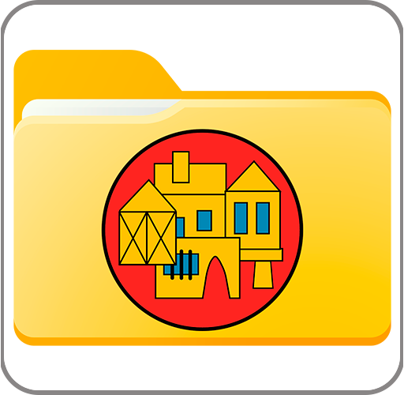
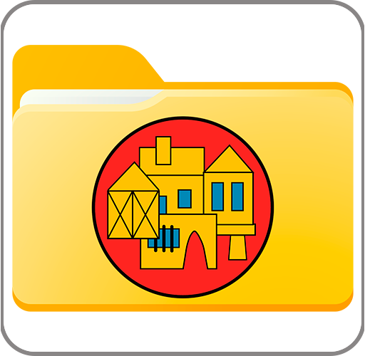
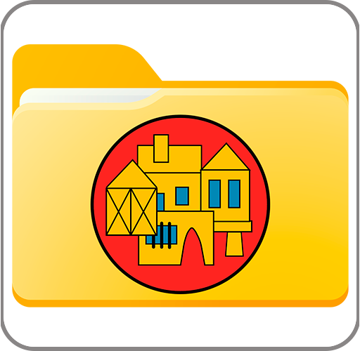
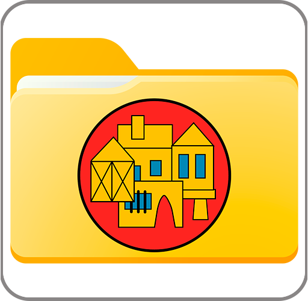

Actividades de la Federación de Casas Regionales

Actividades de la Federación de Casas Regionales

 
Actividades de la Federación de Casas Regionales

Actividades de la Federación de Casas Regionales
Día de las Casas Regionales

Feria Folklore

Campeonato Mus

Muestra Villancicos

Vino Navidad

Castillo de la Mota

Excursiones

Varios